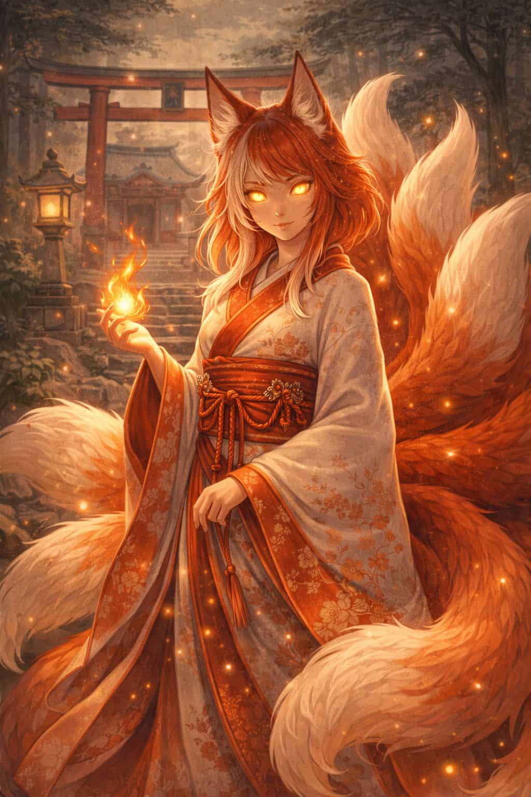

The Kitsune

Origin and Myth
The Kitsune is a magical fox spirit from Japanese mythology known for intelligence, trickery, and powerful shape‑shifting abilities. Some Kitsune serve as loyal guardians and messengers of the god Inari, while others appear as playful tricksters who test the intentions of humans.
Key Traits
- Shape-shifting into human form
- Multiple tails (up to nine) indicating age and power
- Associated with fire, illusion, and magic
- Servants or messengers of the deity Inari
Cultural Significance
Kitsune appear throughout Japanese folklore as symbols of intelligence, mystery, and transformation. They embody the balance between mischief and protection, often teaching lessons about honesty, respect, and the unseen forces that shape the world.